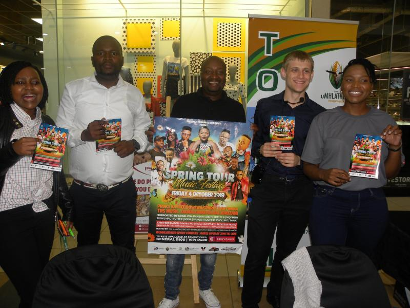

About
Eight years building brands, leading teams, and turning digital channels into real business outcomes.
I sit at the intersection of strategy and execution, comfortable owning a campaign end to end, coaching a team, or getting hands-on with an SEO audit. This portfolio highlights a selection of projects where I made a measurable difference.
Selected Projects
Work that moved the needle
Darwin Recruitment: Digital Presence Overhaul
Darwin's website had weak technical foundations, no clear content strategy, and was generating virtually no inbound leads from organic search. I took full ownership of the fix.
Conducted a full technical audit and restructured the site architecture, fixing page hierarchy, implementing redirects, eliminating plugin bloat, and overseeing a codebase clean-up with a contracted web developer. Converted all images to WebP with server-level automation. Implemented lazy loading, schema markup, and mobile optimisation. Rebuilt the content strategy from scratch around real client search intent, hired and directed a writer, and launched a link building and brand mention strategy targeting AI overviews.
from web articles
achieved
enquiries
Trademarkia: Content Strategy and Authority Building
Trademarkia had an opportunity to become a go-to online resource for trademark, patent, and copyright questions, but lacked the content infrastructure to compete for organic visibility.
Led a content team to build out a structured information hub targeting high-intent IP-related queries. Developed the editorial strategy, maintained legal accuracy standards, and coached writers to produce content that balanced SEO performance with genuine authority. Progressed through three roles over two and a half years, from legal copywriter to assistant editor to content manager.
users achieved
2.5 years
View published work: Trademarkia Knowledge Hub
Brilliant Professional Services: Digital PR and Link Building
Tasked with building an in-house link acquisition function from scratch for a legal services client, with minimal budget. Rather than buying links, I focused on earning them through genuine editorial contribution, pitching expert commentary, bylined articles, and collaborative pieces to relevant, authoritative publications.
A selection of placements secured during this period:
All placements earned editorially. No paid promotion. These represent a sample of the work completed during this period.
PSN Travel Frenzy: Tourism Trivia Lead Generation
A travel startup with no existing customer base and no marketing infrastructure needed to build pipeline from scratch. I conceived and executed an end-to-end campaign, entirely offline, entirely from nothing.
Cold-approached tour operators and tourist destinations within a two-hour radius to secure sponsors willing to contribute prizes in exchange for social media mentions. Designed all marketing materials, managed the logistics, and personally hosted the Tourism Trivia competition live in a busy shopping centre, microphone in hand. Entry required an email address, converting foot traffic directly into a qualified lead list, which became the foundation for the company's first email marketing strategy.

all acquired via outreach
presenter · follow-up